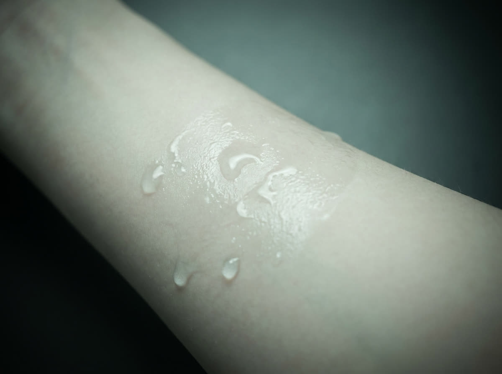
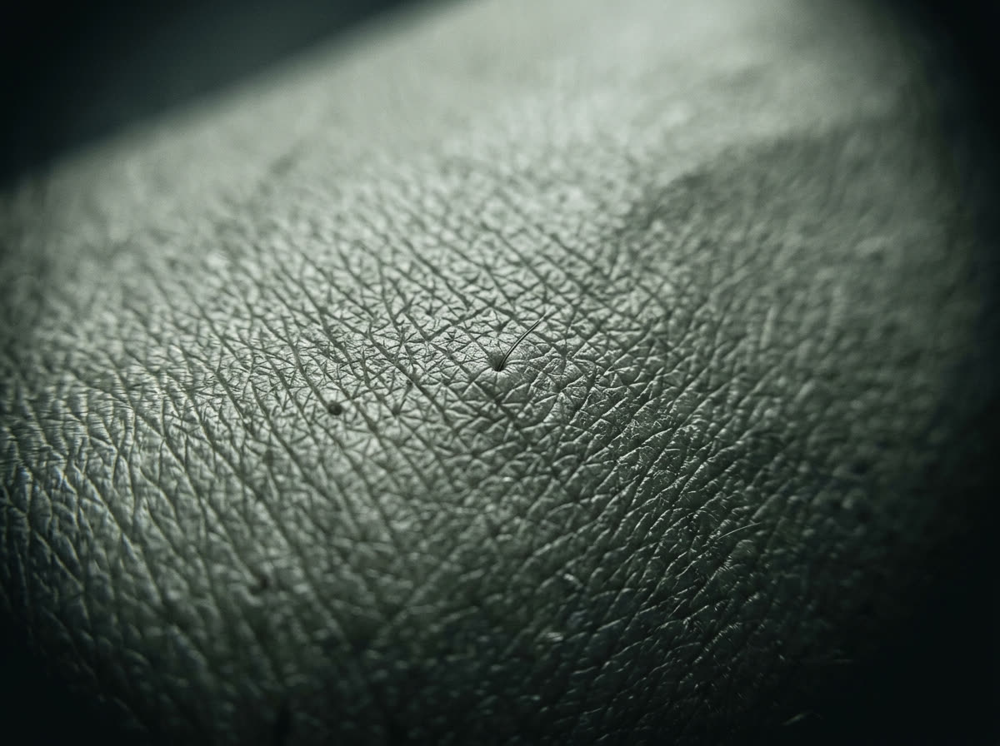

Avaliação medida, protocolo individual, evolução registrada sessão a sessão. Sem promessa de milagre.
leituras de amostra, para ilustrar o formato do laudo
A porta fecha e o ruído fica. A leitura da sua pele começa antes do toque.
Minutos de calor úmido. Poros dilatados, músculos menos armados, leitura mais limpa.
Hidratação, oleosidade e sensibilidade viram números. O protocolo nasce deles.
Ativos escolhidos pela leitura do dia, não pelo seu tipo de pele.
Cada sessão entra no histórico. A curva importa mais que a foto isolada.
Mais nítida, mais leve. O contorno de luz que dá nome à casa.
Deslize para conhecer. Toda entrada começa pela avaliação medida.

Vapor, extração e máscara calmante. A base de qualquer rotina que funciona.

Renovação mecânica suave para textura, manchas leves e viço imediato.
Pressão média guiada pela sua semana, não pelo relógio.
Método manual para inchaço e circulação, com toque firme e ritmo constante.
Protocolo de luminosidade: ácidos leves, hidratação profunda e massagem facial.
Assinatura mensal com rituais combinados e evolução da pele acompanhada no laudo.
Agende a avaliação. Saia com um plano e com os seus números.
Agendar avaliação